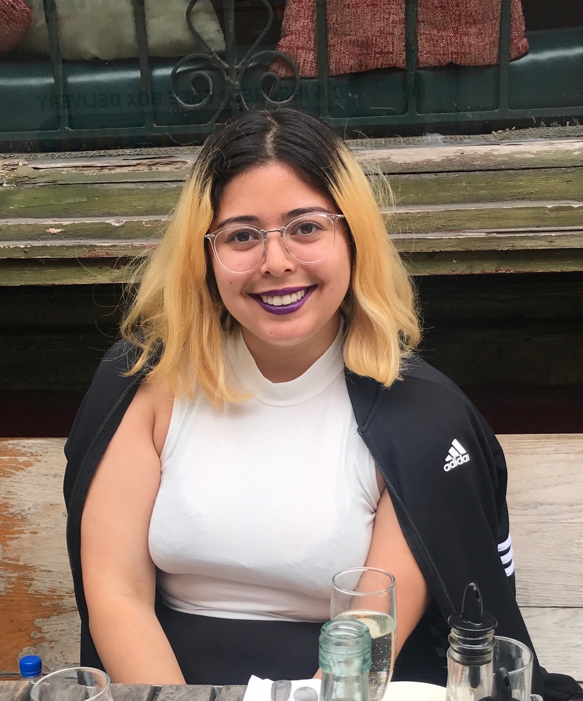
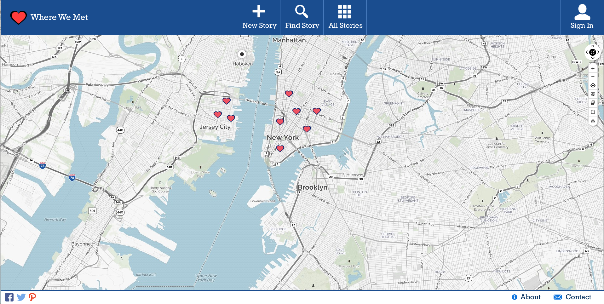
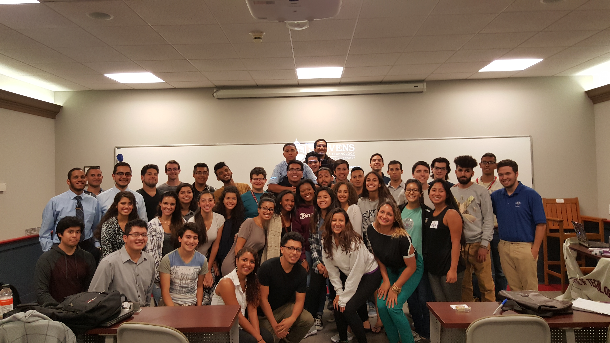
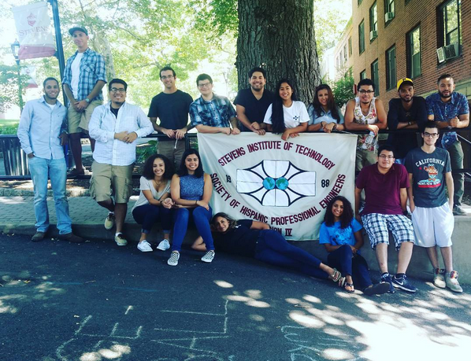

Susana Restrepo (pronounced soo-ZA-nuh res-TRE-poh) is a Colombian computer science student, and programmer from the Greater New York City area. Her coding experience is derived from class projects, hackathons, and interns. You can find a lot of her independent projects at her GitHub account.
Her leadership experience includes: being secretary from the Society of Hispanic Professional Engineers (SHPE), founding the first hackathon on the Stevens campus, and public relations chair for the Transfer Student Association.
Susana Restrepo

Occupation Student
School Stevens Institute of Technology
Graduation Dec. 2018
Location New York City Metro Area
Contact srestrep@stevens.edu
Resume
Work Experience
Goldman Sachs (Summer 2018)
At Goldman Sachs in summer 2018, Susana:- Developed REST endpoints using Dropwizard to support a client-facing portal that displays financial data.
- Wrote code that gathers data from the database, parses it to make columns more readable, and sends it through JSON objects to the UI.
- Added Swagger UI capability in order to test GET/POST commands on the endpoints.
Goldman Sachs (Summer 2017)
Fomerly, Susana also:- Wrote loading and unloading scripts to transfer data from a shared database to new private IQ Sybase database.
- Prepared data in database to be compatible with new strategic reporting technology, Tableau.
- Added functionality for international trading within internal fund transfer web application using Struts1.
Goldman Sachs (Summer 2016)
During her first internship at Goldman, she:- Was tasked with redefining the client on boarding process to increase efficiency.
- Redesigned and optimized database schema.
- Created SQL and DDL code to create databases in Sybase.
- Developed user interface that provided better communication between employees.
Relevant Projects
ClownSpotter (HackNY Hackathon)


Susana created ClownSpotter, a web app that tracked clown sightings. She:
- Developed a web app that tracked clown sightings per region for HackNY hackathon that won four awards: Best use of MongoDB, best user design, #HackHarrassment, and most topical.
- Created a MongoDB database to handle clown sighting submissions.
- Designed the front page of the website using BootStrap.
- Connected the front end to the database using PHP to handle the sending data to the database.
- Created the RESTful endpoints using Eve, a Python REST API with MongoDB compatibility.
Where We Met (Senior Design)

For her senior design project, Susana worked on a project called Where We Met. She:
- Developed a website that tracked the locations and the stories of where couples met for the first time.
- Used Node.js and MongoDB to search, create, and delete stories from the database, and to display the information on the UI.
- Collaborated with her client on the design of the web page.
Leadership Positions
During her tenure at Stevens, Susana was very active within the student body. She participated in many organizations, including the Society of Hispanic Professional Engineers, DuckHacks, and the Transfer Student Association.
The Society of Hispanic Professional Engineers


Susana was secretary of SHPE for two years. She:
- Was in charge of interacting with our general body through meetings and sending out weekly newsletters with volunteering, employment, and scholarship opportunities using MailChimp.
- Volunteered at minority-majority schools to expose them to computer science by doing presentations on campus.
- Gave presentations in English and in Spanish to parents on financial aid and getting access to resources to get their child through college.
DuckHacks (The Stevens Hackathon Committee)


Because of Susana's love for all things hackathon, she brought back her passion to the Stevens body by founding one on campus. She:
- Met up and collaborated with school administration, several student-run organizations, caterers, and sponsors.
- Advertised the event through social media, word of mouth, and announcement in classes.
- Managed the event day-of, including coordinating with sponsors (Google and JP Morgan), going on food runs, and staying at the event for the full duration of the event (24 hours+).
Transfer Student Association
During her last full year at university, Susana worked as the public relations chair for the Stevens Transfer Student Association. There, she:- Created flyers for events using Gimp, Photoshop, and Canva.
- Interacted with the general body using Facebook, Instagram, and GroupMe.
- Acted as a mentor for new incoming transfer students.